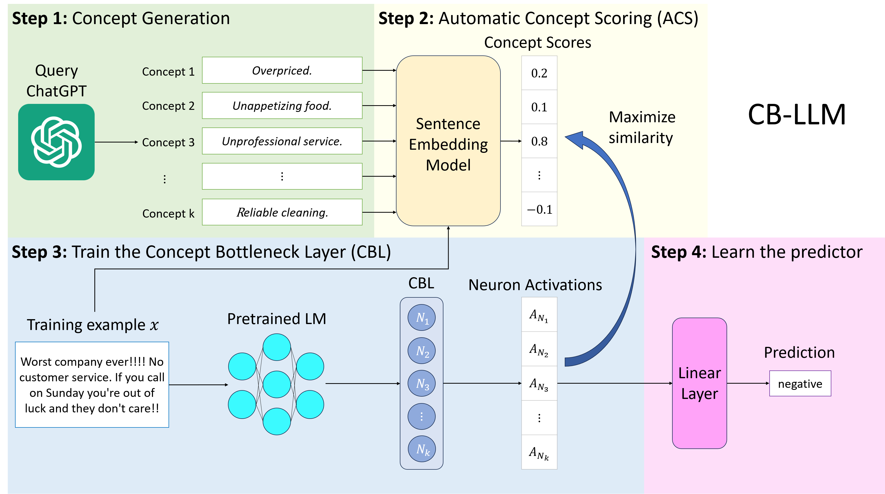

Concept Bottleneck Large Language Models (CB-LLMs) put a layer of human-readable concepts between the encoder and the classifier — so the model's decision can be inspected, edited, and unlearned in concept space. We built a GUI to make that capability usable by people who aren't fluent in PyTorch.

Background
In Crafting Large Language Models for Enhanced Interpretability (Weng et al., ICML 2024 MI Workshop), the authors propose injecting a Concept Bottleneck Layer (CBL) into a pretrained LLM. Instead of mapping straight from contextual embeddings to a final prediction, the model first projects through an intermediate space whose dimensions correspond to interpretable concepts. The bottleneck is supervised so each dimension carries a stable, named meaning — letting users see which concepts a prediction relied on, and intervene if any of them are wrong.
What we built
A web GUI on top of CB-LLM that lets a non-ML user:
- visualize per-token concept activations for an input,
- adjust concept weights in real time and re-run the prediction,
- unlearn concepts the user flags as biased or undesired,
- swap the underlying dataset (currently defaults to SST-2 via SetFit) and re-train.
The frontend is a React app (app.js); the backend is a Flask service (app.py) that wraps the CB-LLM training pipeline — concept-label extraction, CBL training with automatic concept scoring (ACS), and full-LLM fine-tuning on top of a RoBERTa backbone.
Why this matters
Interpretability methods often produce explanations that look compelling but can't be acted on. CB-LLM is unusual in that the explanation is the intervention surface — once you can see concept activations, you can also turn them off. A GUI is what closes the loop: it makes the "edit the concept and re-predict" workflow available to the people who care about model behavior (educators, auditors, domain experts) but who shouldn't have to write training scripts to participate.
What's next
The current MVP is bottlenecked on (a) concept-label quality — extraction from datasets is still noisy — and (b) latency, since every adjustment re-runs the full forward pass. The interesting follow-ups are using better concept-scoring methods and caching activations so edits feel instant.
Repo: github.com/gabrielchasukjin/ConceptBottleneck-GUI-Experiment.